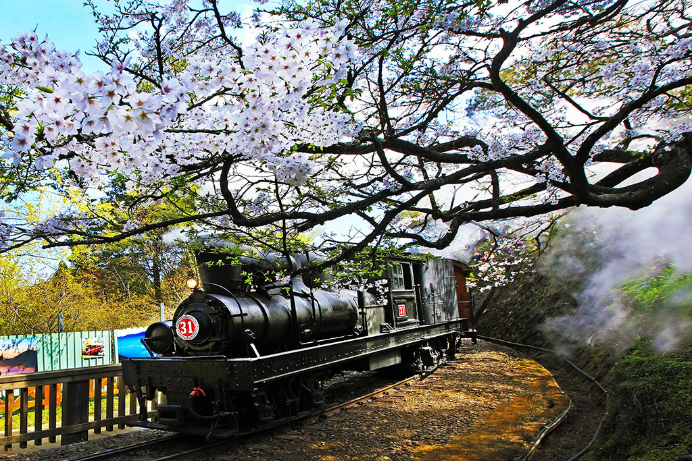
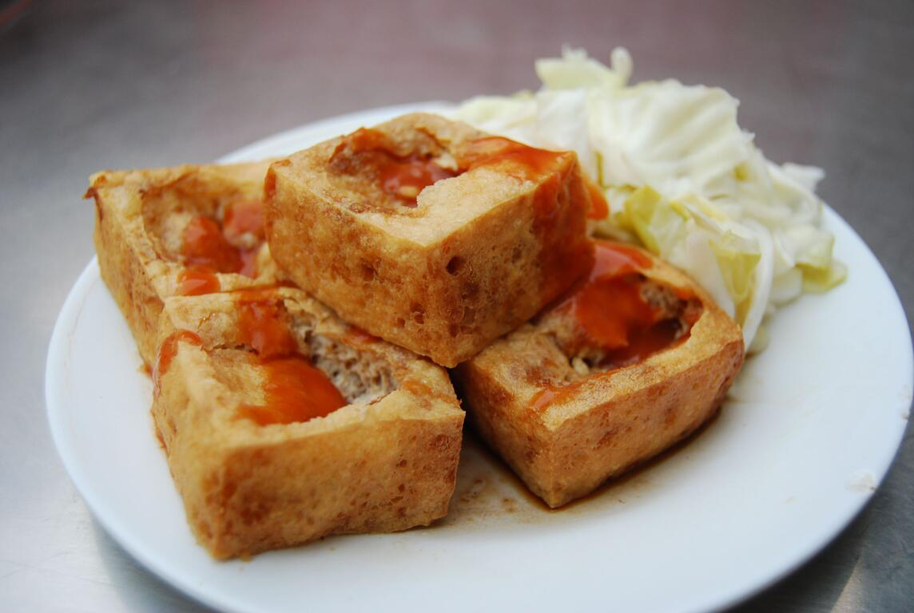
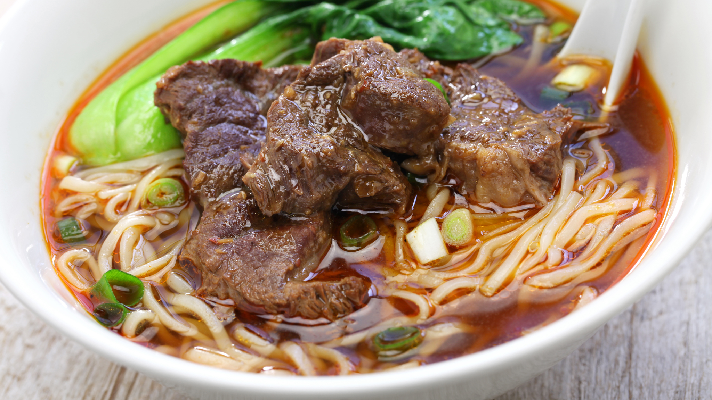

歡迎來到台灣
探索台灣的美麗山川與特色文化

九份老街
懷舊與美食的天堂
九份老街位於新北市，以其傳統建築、紅燈籠和狹窄的街道而聞名。這裡的芋圓、茶葉蛋和各式小吃吸引了無數遊客。夜幕降臨時，紅燈籠亮起，整條街道沉浸在溫暖的光芒中，彷彿回到了日治時代的繁華時光。
新北市
山城
美食

日月潭
台灣最美麗的山中明珠
日月潭位於南投縣，是台灣最大的天然淡水湖泊。湖畔環繞著翠綠的山脈，湖水清澈如鏡。單車環湖是最受歡迎的遊玩方式，沿途可欣賞各式景觀，包括文武廟、慈恩塔等著名景點。春天時湖邊櫻花盛開，是最佳遊覽時節。
南投
湖景
單車
自然

台北 101
俯瞰台北的壯觀視野
台北 101 是台灣的象徵性建築，曾經是世界最高的建築之一。搭乘高速電梯前往觀景台，只需 37 秒就能到達 388 公尺高的位置。在晴朗的日子，可以看到整個台北盆地的壯闊景色。入夜後，101 的光雕秀更是迷人，是遊客必遊的景點。
台北
建築
景觀

墾丁國家公園
國境之南的碧海青天
墾從鵝鑾鼻燈塔的純白身影到龍磐大草原的斷崖海景，每一處都展現了大自然的鬼斧神工。
屏東
海灘
水上運動
度假

阿里山
雲端上的仙境
阿里山位於嘉義縣，是台灣最著名的山景景點之一。搭乘日本時代遺留的阿里山森林鐵路登上山頂，沿途可欣賞茶園和檜木林。山頂的日出壯觀無比，被譽為「阿里山五奇」之一。此外，樹齡超過 2000 年的神木更是必看景點，充滿靈性和歷史意義。
嘉義
山景
日出
鐵路

七星潭
湛藍月牙下的礫石樂章
這片迷人的月牙形海灣以湛藍深邃的太平洋海水與獨特的礫石灘聞名。這裡沒有細沙，取而代之的是圓潤透亮的青石與麥飯石，在浪潮拍打下發出清脆治癒的碰撞聲。漫步在海岸線上，遠方的清水斷崖與層疊的山巒交織成一幅絕美的山海畫卷。
花蓮
景觀
海灘


珍珠奶茶
風靡全球的台灣國民靈魂

臭豆腐
越臭越香的庶民美食經典

牛肉麵
匯聚匠心的台灣國民料理
🏷️ 熱門標籤
旅遊
台北
南部
中部
海邊
山景
美食
特色小吃
溫泉
文化
探險
度假
👋關於本部落格
發現台灣之美！
旅遊愛好者與台灣文化推廣者
歡迎來到我的台灣旅遊部落格！我致力於分享台灣各地的美景、美食和文化。無論你是第一次來台灣，還是已經是台灣迷，這裡都有許多值得探索的內容。我們一起發現這座寶島的無窮魅力，體驗台灣人的熱情款待與深厚的文化底蘊。